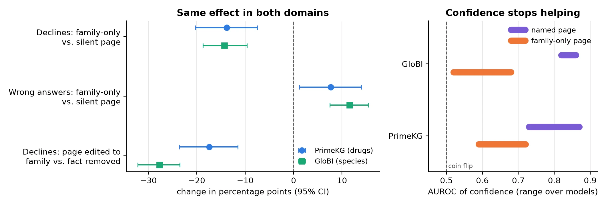
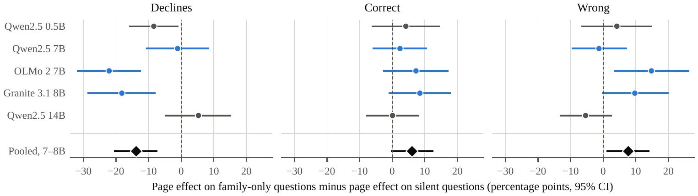
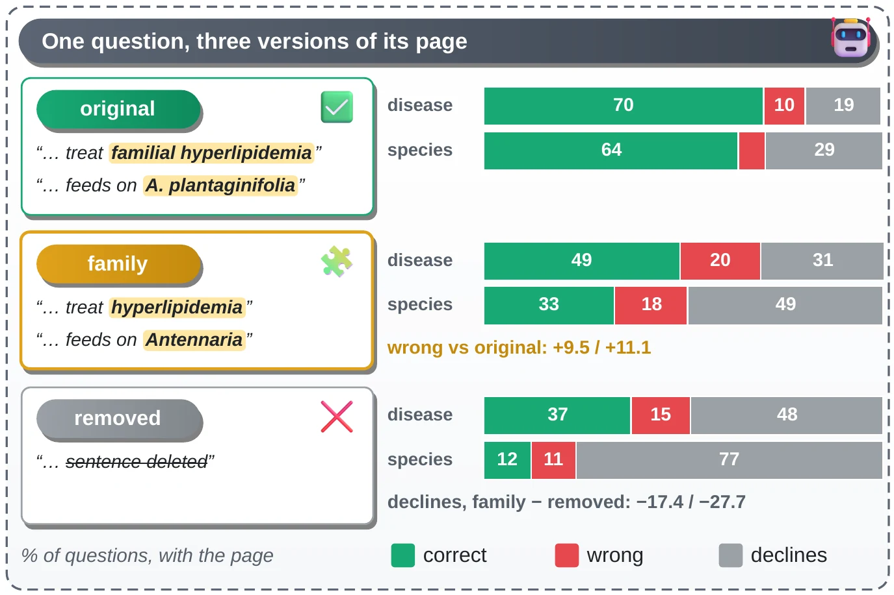
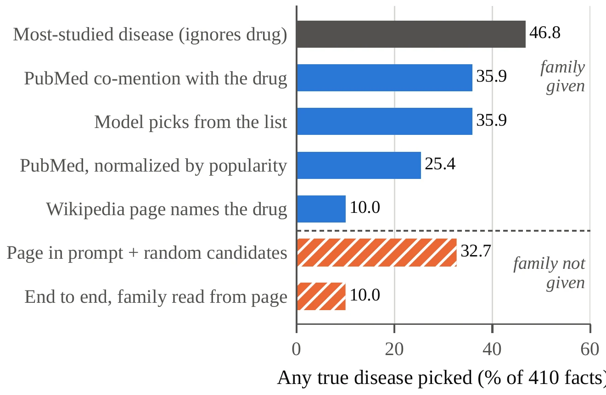
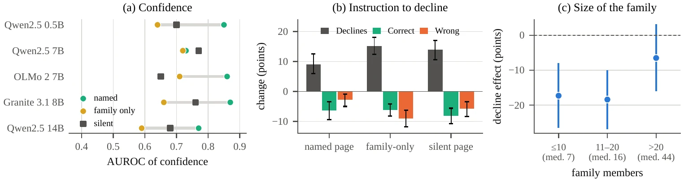

CLADE: Category-Level Answering from Deficient Evidence in Retrieval-Augmented Language Models
arXiv preprint, 2026. Under review at the AAAI 2027 NeuSymBridge Workshop
When a retrieved page names only the answer's family, language models answer instead of abstaining, and those answers are wrong about half the time. An ontology can recover the exact answer once the family is known; finding the family is the bottleneck.
Retrieval-augmented systems often receive a page that is true and on topic but too coarse. Asked which disease lovastatin treats, the page says “hyperlipidemia” where the answer is “familial hyperlipidemia.” Asked what a moth feeds on, the page names the genus Antennaria but not the species. The page cannot settle the answer, but an ontology or a taxonomy turns the family into a short list of candidates. We call this resolvable insufficiency.
A careful agent should notice it and expand the family, or decline. Models instead pick a family member and answer. We call that failure CLADE, category-level answering from deficient evidence, and measure it with matched page types, counterfactual page edits and two domains.
Study at a glance
| Domains | Drugs and diseases from PrimeKG with the MONDO disease ontology; species interactions (eats, preys on, parasite of, pollinates) from GloBI with the taxonomy |
|---|---|
| Questions | 856 PrimeKG and 900 GloBI multiple-choice questions; every wrong option is a sibling of the answer, plus “Not enough information to tell” |
| Page types | Names the answer, names only its family, or says nothing, from Wikipedia and PubMed |
| Models | Qwen2.5 Instruct 0.5B, 7B and 14B, OLMo 2 7B and Granite 3.1 8B |
| Tests | Family-only against silent pages, counterfactual edits of named pages, confidence filtering, decline instructions, family size, and ontology-based recovery |

Findings
- A family name makes models answer. Relative to a silent page, a family-only page cuts declines by 13.8 points on PrimeKG and 14.3 points on GloBI, and adds wrong answers (+7.7 and +11.6 points).
- The family name is the cause. Editing the same page so the answer becomes its family name cuts declines by 17.4 points on PrimeKG and 27.7 points on GloBI, compared with deleting the sentence.
- The freed answers are near guesses. Precision on family-only pages is 45 to 59% on PrimeKG and 22 to 28% on GloBI, where chance is 20%, against 84 to 95% on pages that name the answer.
- Simple fixes do not solve it. Confidence loses its signal on family-only pages, a decline instruction also throws away good answers, and a larger model shows the same effect.
- The ontology closes the gap once the family is found. Given the family, the candidate list holds the answer 98.5% of the time (median 14 candidates), but string matching finds the family on the page only 19.8% of the time. Letting the model choose the family raises end-to-end recovery from 10.0% to 26.8%.




Related work
LABEL: Literature Asymmetry between Efficacy and Limits in Drug Knowledge and Language Models
arXiv preprint, 2026. Under review at the AAAI 2027 Workshop on Health Intelligence (W3PHIAI)Identifying and Resolving Pitfalls of Knowledge-Based VQA Benchmarks: Auditing, Repairing, and Augmenting
European Conference on Computer Vision (ECCV 2026)How Finely Can Vision-Language Models See Biology? Bio-VQA: A Benchmark for Taxonomic, Morphological, Spatial and Individual Reasoning
IEEE/CVF Winter Conference on Applications of Computer Vision (WACV 2027)
Cite
@article{rayeed2026clade,
title = {CLADE: Category-Level Answering from Deficient Evidence in Retrieval-Augmented Language Models},
author = {Rayeed, S M and Stewart, Charles V. and Ma, Yao},
journal = {arXiv preprint arXiv:2611.14355},
year = {2026}
}